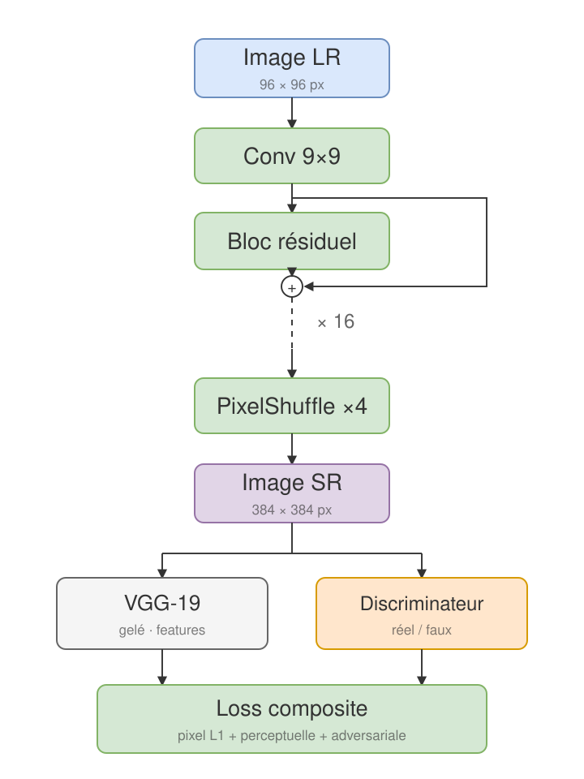

Enhance-This
Super-résolution d'images par GANs : trois architectures SRGAN implémentées successivement en PyTorch, jusqu'à un pipeline stabilisé. Warmup du générateur résiduel, loss composite (pixel, perceptuelle VGG-19, adversariale) et suivi quantitatif du PSNR.
2026 · Étude comparative open source